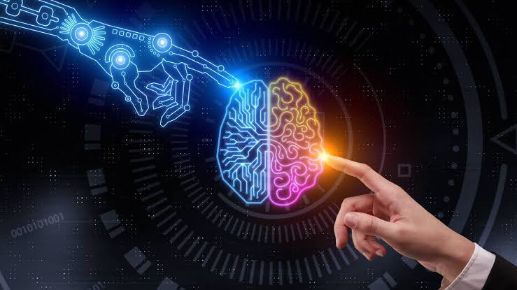

Tesla was one of the first automotive brands to launch a self-driving vehicle, and Audi, Cadillac, and Volvo are already developing their own models.
When it comes to saving our lives, a lot of organizations and medical care centers are relying on AI. There are many examples of how AI in healthcare has helped patients all over the world. An organization called Cambio Health Care developed a clinical decision support system for stroke prevention that can give the physician a warning when there’s a patient at risk of having a heart stroke.Another such example is Coala life which is a company that has a digitalized device that can find cardiac diseases. Similarly, Aifloo is developing a system for keeping track of how people are doing in nursing homes, home care, etc. The best thing about AI in healthcare is that you don’t even need to develop a new medication. Just by using an existing medication in the right way, you can also save lives.
Space expeditions and discoveries always require analyzing vast amounts of data. Artificial Intelligence and Machine learning is the best way to handle and process data on this scale. After rigorous research, astronomers used Artificial Intelligence to sift through years of data obtained by the Kepler telescope in order to identify a distant eight-planet solar system.Artificial Intelligence is also being used for NASA’s next rover mission to Mars, the Mars 2020 Rover. The AEGIS, which is an AI-based Mars rover is already on the red planet. The rover is responsible for autonomous targeting of cameras in order to perform investigations on Mars.
These days Virtual assistants have become a very common technology. Almost every household has a virtual assistant that controls the appliances at home. A few examples include Siri, Cortana, which are gaining popularity because of the user experience they provide. Amazon’s Echo is an example of how Artificial Intelligence can be used to translate human language into desirable actions. This device uses speech recognition and NLP to perform a wide range of tasks on your command. It can do more than just play your favorite songs. It can be used to control the devices at your house, book cabs, make phone calls, order your favorite food, check the weather conditions and so on.Another example is the newly released Google’s virtual assistant called Google Duplex, that has astonished millions of people. Not only can it respond to calls and book appointments for you, but it also adds a human touch.
Here’s an alarming fact, the world will need to produce 50 percent more food by 2050 because we’re literally eating up everything! The only way this can be possible is if we use our resources more carefully. With that being said, AI can help farmers get more from the land while using resources more sustainably. Issues such as climate change, population growth, and food security concerns have pushed the industry into seeking more innovative approaches to improve crop yield. Organizations are using automation and robotics to help farmers find more efficient ways to protect their crops from weeds.Blue River Technology has developed a robot called See & Spray which uses computer vision technologies like object detection to monitor and precisely spray weedicide on cotton plants. Precision spraying can help prevent herbicide resistance. Apart from this, Berlin-based agricultural tech start-up called PEAT, has developed an application called Plantix that identifies potential defects and nutrient deficiencies in the soil through images. The image recognition app identifies possible defects through images captured by the user’s smartphone camera. Users are then provided with soil restoration techniques, tips, and other possible solutions. The company claims that its software can achieve pattern detection with an estimated accuracy of up to 95%.
